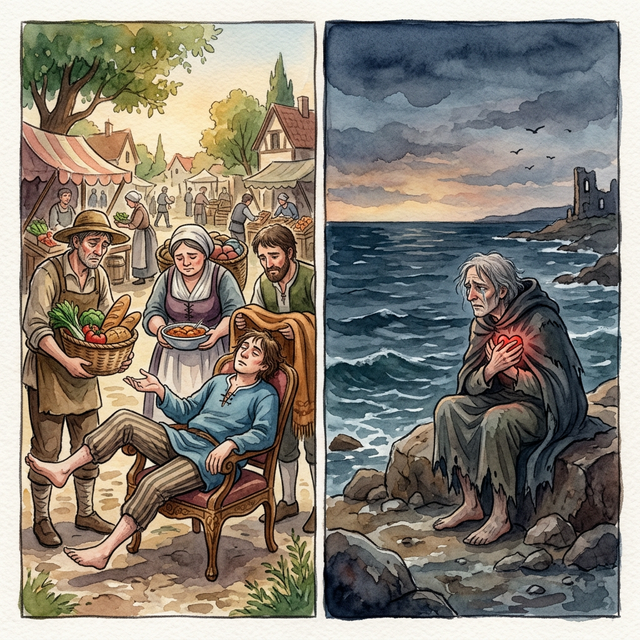
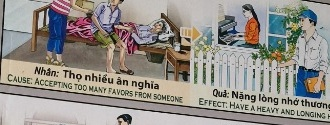

La Deuda InvisibleThe Invisible DebtIl debito invisibile隐形债务الديون غير المرئيةНевидимый долгDie unsichtbare SchuldLa dette invisible見えない借金A dívida invisívelNợ vô hình
Quien recibe sin devolver teje en silencio las cadenas de su propia alma. He who receives without returning silently weaves the chains of his own soul. Kẻ nhận mà không đáp lại âm thầm dệt nên xiềng xích cho chính linh hồn mình. Wer empfängt, ohne zurückzugeben, webt still die Ketten seiner eigenen Seele. Кто получает, не отдавая, молча сплетает цепи для собственной души. Celui qui reçoit sans rendre tisse en silence les chaînes de sa propre âme. Chi riceve senza restituire intreccia in silenzio le catene della propria anima. Quem recebe sem devolver tece em silêncio as correntes da própria alma. 返さずに受け取る者は、静かに自らの魂の鎖を織り上げる。 接受而不回报的人，无声地编织着自己灵魂的锁链。 من يأخذ دون أن يرد، ينسج بصمت سلاسل روحه.
Recibir ayuda en tiempos de necesidad es humano, pero recostarse perpetuamente en el dolor y sacrificio ajeno —sin ofrecer jamás reciprocidad ni gratitud— genera un anclaje energético sombrío...
El confort obtenido a costa del sudor del hermano forja, de forma invisible, una pesada cadena en el pecho. Esta falsa ligereza exige un precio exacto cuando la balanza del cosmos pasa la factura.
Por lo tanto, el transgresor es despojado de su paz en ciclos posteriores, experimentando una melancolía que no cesa, y un vacío emocional agobiante similar al peso de los favores que egoístamente consumió sin devolver.
Receiving help in times of need is human, but perpetually leaning into the pain and sacrifice of others—without ever offering reciprocity or gratitude—creates a dark energetic anchor...
The comfort obtained at the cost of the brother's sweat forges, invisibly, a heavy chain on the chest. This false lightness demands an exact price when the scales of the cosmos take its toll.
Therefore, the transgressor is stripped of his peace in subsequent cycles, experiencing a melancholy that does not cease, and an overwhelming emotional emptiness similar to the weight of the favors he selfishly consumed without returning.
Ricevere aiuto nei momenti di bisogno è umano, ma appoggiarsi continuamente al dolore e al sacrificio degli altri, senza mai offrire reciprocità o gratitudine, crea un'ancora energetica oscura...
Il conforto ottenuto a prezzo del sudore del fratello forgia, invisibilmente, una pesante catena sul petto. Questa falsa leggerezza esige un prezzo esatto quando la bilancia del cosmo prende il sopravvento.
Pertanto, il trasgressore viene privato della sua pace nei cicli successivi, sperimentando una malinconia che non cessa, e un travolgente vuoto emotivo simile al peso dei favori che egoisticamente ha consumato senza ricambiare.
在需要的时候接受帮助是人之常情，但永远倾向于他人的痛苦和牺牲——而不提供互惠或感激——会创造一个黑暗的能量锚……
用哥哥的汗水换来的安慰，无形中在胸口结成了一条沉重的锁链。当宇宙的尺度受到影响时，这种虚假的轻盈需要一个确切的价格。
因此，违规者在随后的循环中被剥夺了平静，体验着永不停息的忧郁，以及一种压倒性的情感空虚，就像他自私地消耗而没有回报的恩惠的重量一样。
إن تلقي المساعدة في أوقات الحاجة هو أمر إنساني، ولكن الميل الدائم إلى ألم وتضحيات الآخرين - دون تقديم المعاملة بالمثل أو الامتنان على الإطلاق - يخلق مرساة حيوية مظلمة ...
الراحة التي تم الحصول عليها على حساب عرق الأخ تشكل، بشكل غير مرئي، سلسلة ثقيلة على صدره. تتطلب هذه الخفة الزائفة سعرًا محددًا عندما تؤثر موازين الكون.
لذلك، يُجرد المتجاوز من سلامه في دورات لاحقة، فيعيش حزنًا لا ينقطع، وفراغًا عاطفيًا غامرًا يشبه ثقل النعم التي استهلكها بأنانية دون إرجاع.
Получать помощь в трудную минуту – это человечно, но постоянное погружение в боль и жертвы других, никогда не предлагая взаимности или благодарности, создает темный энергетический якорь...
Утешение, добытое ценой пота брата, невидимо выковывает на груди тяжелую цепь. Эта ложная легкость требует точной цены, когда масштабы космоса берут свое.
Таким образом, нарушитель лишается своего покоя в последующих циклах, испытывая непрекращающуюся меланхолию и непреодолимую эмоциональную пустоту, подобную весу услуг, которые он эгоистично потреблял, не возвращаясь.
In Zeiten der Not Hilfe anzunehmen ist menschlich, aber sich ständig dem Schmerz und der Opferbereitschaft anderer hinzugeben – ohne jemals Gegenleistung oder Dankbarkeit anzubieten – schafft einen dunklen energetischen Anker ...
Der durch den Schweiß des Bruders erlangte Trost legt unsichtbar eine schwere Kette um die Brust. Diese falsche Leichtigkeit verlangt einen genauen Preis, wenn die Maßstäbe des Kosmos ihren Tribut fordern.
Daher wird der Übertreter in den folgenden Zyklen seines Friedens beraubt und erlebt eine Melancholie, die nicht aufhört, und eine überwältigende emotionale Leere, die der Last der Gefälligkeiten ähnelt, die er selbstsüchtig konsumiert hat, ohne sie zu erwidern.
Recevoir de l'aide en cas de besoin est humain, mais s'appuyer perpétuellement sur la douleur et le sacrifice des autres – sans jamais offrir de réciprocité ou de gratitude – crée un ancrage énergétique sombre...
Le confort obtenu au prix de la sueur du frère forge, de manière invisible, une lourde chaîne sur la poitrine. Cette fausse légèreté exige un prix précis lorsque la balance du cosmos fait des ravages.
Par conséquent, le transgresseur est privé de sa paix dans les cycles suivants, éprouvant une mélancolie qui ne cesse pas et un vide émotionnel écrasant semblable au poids des faveurs qu'il a égoïstement consommées sans revenir.
必要なときに助けを受けるのは人間の本能ですが、互恵や感謝の気持ちをまったく示さずに、他人の痛みと犠牲に絶えず寄りかかると、暗いエネルギーのアンカーが作成されます...
兄弟の汗を犠牲にして得た快適さは、目に見えないほどに胸に重い鎖を築きます。この偽りの軽さは、宇宙のスケールが犠牲を払うとき、正確な代価を要求します。
したがって、違反者はその後のサイクルで平安を奪われ、止まらない憂鬱と、返さずに利己的に消費した恩恵の重さに似た圧倒的な感情の空虚感を経験します。
Receber ajuda em momentos de necessidade é humano, mas apoiar-se perpetuamente na dor e no sacrifício dos outros - sem nunca oferecer reciprocidade ou gratidão - cria uma âncora energética sombria...
O conforto obtido à custa do suor do irmão forja, invisivelmente, uma pesada corrente no peito. Esta falsa leveza exige um preço exato quando a balança do cosmos cobra seu preço.
Portanto, o transgressor é despojado de sua paz nos ciclos subsequentes, vivenciando uma melancolia que não cessa, e um vazio emocional avassalador semelhante ao peso dos favores que egoisticamente consumiu sem retribuir.
Nhận được sự giúp đỡ trong những lúc cần thiết là nhân tính, nhưng việc mãi mãi dựa dẫm vào nỗi đau và sự hy sinh của người khác — mà không bao giờ có sự đáp lại hay lòng biết ơn — sẽ tạo ra một mỏ neo năng lượng tăm tối...
Sự thoải mái có được từ mồ hôi của người anh em sẽ vô hình trung tạo thành một sợi xích nặng nề trên ngực. Sự nhẹ nhàng giả tạo này đòi hỏi một cái giá chính xác khi cán cân của vũ trụ tính toán hóa đơn.
Do đó, kẻ vi phạm sẽ bị tước mất sự bình yên trong các chu kỳ sau, trải qua một nỗi u uất không dứt, và một sự trống rỗng cảm xúc đè nặng tương tự như sức nặng của những ân huệ mà kẻ đó đã ích kỷ tiêu thụ mà không trả lại.
El Equipaje Invisible
The Invisible Luggage
Il bagaglio invisibile
看不见的行李
الأمتعة غير المرئية
Невидимый багаж
Das unsichtbare Gepäck
Le bagage invisible
見えない荷物
A bagagem invisível
Hành Lý Vô Hình
Un joven de modales complacientes no dudaba en exigir, día tras día, grandes favores, cobijo y recursos de quienes lo amaban. Él creía, en su soberbia, que el afecto ajeno era su derecho de nacimiento...
Pero, con el paso de los inviernos y a pesar de haber llenado sus graneros, comenzó a sentir un peso asfixiante sobre los hombros; una angustia sorda que ninguna distracción podía callar.
Así fue como descubrió, muy a su pesar, que todo el consuelo que tomamos del prójimo y nunca compensamos, se convierte irremediablemente en la pesada nostalgia que anclará al corazón el día de mañana.
A young man with complacent manners did not hesitate to demand, day after day, great favors, shelter and resources from those who loved him. He believed, in his arrogance, that the affection of others was his birthright...
But, as the winters passed and despite having filled his barns, he began to feel a suffocating weight on his shoulders; a dull anguish that no distraction could silence.
This is how he discovered, much to his regret, that all the consolation we take from others and never compensate, inevitably becomes the heavy nostalgia that will anchor the heart tomorrow.
Un giovane dai modi compiacenti non esitava a esigere, giorno dopo giorno, grandi favori, riparo e risorse da chi lo amava. Credeva, nella sua arroganza, che l'affetto degli altri fosse un suo diritto di nascita...
Ma, col passare degli inverni e pur avendo riempito le sue stalle, cominciò a sentire un peso soffocante sulle spalle; un'angoscia sorda che nessuna distrazione poteva mettere a tacere.
È così che ha scoperto, con suo grande rammarico, che tutta la consolazione che prendiamo dagli altri e non compenseremo mai, diventa inevitabilmente la pesante nostalgia che ancorerà il cuore domani.
一个举止得意的年轻人日复一日地毫不犹豫地向爱他的人索取巨大的恩惠、庇护所和资源。他傲慢地相信，别人的喜爱是他与生俱来的权利……
但是，随着冬天的过去，尽管他的谷仓已经装满了，他还是开始感到肩上有令人窒息的重量；一种任何干扰都无法平息的隐隐的痛苦。
令他遗憾的是，他就这样发现，我们从别人那里得到的、从未补偿过的安慰，不可避免地会变成沉重的怀旧之情，锚定明天的心。
لم يتردد الشاب ذو الأخلاق الراضية في المطالبة، يومًا بعد يوم، بخدمات كبيرة ومأوى وموارد ممن يحبونه. كان يعتقد في غروره أن محبة الآخرين هي حقه الطبيعي...
ولكن مع مرور الشتاء، وعلى الرغم من امتلاء حظائره، بدأ يشعر بثقل خانق على كتفيه؛ معاناة مملة لا يمكن لأي إلهاء أن يسكتها.
وهكذا اكتشف، مما يأسف عليه كثيرًا، أن كل العزاء الذي نأخذه من الآخرين ولا نعوضه أبدًا، يصبح حتماً الحنين الثقيل الذي سيرسي القلب غدًا.
Молодой человек с самодовольными манерами, не колеблясь, день за днем требовал больших милостей, приюта и ресурсов от тех, кто его любил. В своем высокомерии он верил, что любовь к другим — его право по рождению…
Но по прошествии зимы, несмотря на то, что его амбары были заполнены, он начал чувствовать удушающую тяжесть на своих плечах; тупая тоска, которую никакое отвлечение не могло заглушить.
Так он, к своему большому сожалению, обнаружил, что все утешения, которые мы получаем от других и никогда не компенсируем, неизбежно становятся тяжелой ностальгией, которая заякорит сердце завтра.
Ein junger Mann mit selbstgefälligen Manieren zögerte nicht, Tag für Tag große Gefälligkeiten, Unterkunft und Ressourcen von denen zu fordern, die ihn liebten. In seiner Arroganz glaubte er, dass die Zuneigung anderer sein Geburtsrecht sei ...
Aber als die Winter vergingen und obwohl seine Scheunen voll waren, begann er eine erdrückende Last auf seinen Schultern zu spüren; eine dumpfe Angst, die keine Ablenkung zum Schweigen bringen konnte.
So entdeckte er zu seinem großen Bedauern, dass all der Trost, den wir von anderen annehmen und den wir nie entschädigen, unweigerlich zu einer schweren Nostalgie wird, die das Herz morgen festigen wird.
Un jeune homme aux manières complaisantes n'hésitait pas à exiger, jour après jour, de grandes faveurs, un abri et des ressources de la part de ceux qui l'aimaient. Il croyait, dans son arrogance, que l'affection des autres était son droit de naissance...
Mais, au fil des hivers et bien qu'il ait rempli ses granges, il commença à sentir un poids suffocant sur ses épaules ; une sourde angoisse qu'aucune distraction ne pouvait faire taire.
C'est ainsi qu'il découvre, à son grand regret, que toute la consolation que l'on prend des autres et que l'on ne compense jamais, devient inévitablement la lourde nostalgie qui ancrera le cœur demain.
自己満足な態度の若者は、自分を愛する人たちに、毎日、多大な好意、避難場所、資源を要求することを躊躇しませんでした。彼は傲慢さのゆえに、他人からの愛情は生まれ持った権利だと信じていた…。
しかし、冬が過ぎ、納屋に物を入れたにもかかわらず、彼は肩に息が詰まるような重みを感じ始めました。鈍い苦痛は、どんな気晴らしも沈黙させることができなかった。
こうして彼は、非常に残念なことに、私たちが他人から受け取るだけで決して埋め合わせることのないすべての慰めが、必然的に明日の心を固定する重い郷愁となることを発見したのである。
Um jovem de modos complacentes não hesitava em exigir, dia após dia, grandes favores, abrigo e recursos daqueles que o amavam. Ele acreditava, em sua arrogância, que o carinho dos outros era seu direito de nascença...
Mas, com o passar dos invernos e apesar de ter enchido os seus celeiros, começou a sentir um peso sufocante nos ombros; uma angústia surda que nenhuma distração poderia silenciar.
Foi assim que descobriu, para seu pesar, que todo o consolo que tiramos dos outros e nunca compensamos, torna-se inevitavelmente a pesada nostalgia que ancorará o coração amanhã.
Một chàng trai với phong thái tự mãn không ngần ngại đòi hỏi, ngày qua ngày, những ân huệ lớn lao, nơi trú ẩn và nguồn lực từ những người yêu thương anh ta. Trong sự kiêu ngạo của mình, anh tin rằng tình cảm của người khác là quyền hiển nhiên của mình...
Nhưng, khi những mùa đông trôi qua và dù đã lấp đầy kho lẫm của mình, anh bắt đầu cảm thấy một sức nặng nghẹt thở trên đôi vai; một nỗi đau âm ỉ mà không sự xao nhãng nào có thể dập tắt.
Đó là cách anh khám phá ra, với niềm hối tiếc muộn màng, rằng tất cả sự an ủi mà chúng ta lấy từ người thân cận mà không bao giờ đền đáp, sẽ không tránh khỏi trở thành một nỗi nhớ nặng nề mỏ neo vào trái tim trong tương lai.

La Inspiración Original
The Original Inspiration
L'Ispirazione Originale
最初的灵感
الإلهام الأصلي
Оригинальное вдохновение
Die Ursprüngliche Inspiration
L'Inspiration Originale
元のインスピレーション
A Inspiração Original
Nguồn Cảm Hứng Nguyên Bản
La historia que hemos relatado en este capítulo está inspirada por el pasaje de la escena original de los murales «Tranh Nhân Quả» (Ilustraciones del Karma) del Templo Linh Ung en Da Nang, capturado en la imagen.
La storia che abbiamo raccontato in questo capitolo è ispirata al passaggio della scena originale dei murali “Tranh Nhân Quả” (Illustrazioni del Karma) del Tempio Linh Ung a Da Nang, catturati nell'immagine.
我们在本章中讲述的故事的灵感来自图像中捕获的岘港灵应寺“Tranh Nhân Quả”（业力插图）壁画的原始场景。
القصة التي رويناها في هذا الفصل مستوحاة من مقطع من المشهد الأصلي لجداريات "ترانه نهان كو" (الرسوم التوضيحية للكارما) لمعبد لينه أونغ في دا نانغ، الملتقطة في الصورة.
История, которую мы рассказали в этой главе, вдохновлена отрывком из оригинальной сцены фрески «Тран Нхан Ку» («Иллюстрации кармы») храма Линь Унг в Дананге, запечатленной на изображении.
Die Geschichte, die wir in diesem Kapitel erzählt haben, ist inspiriert von der Passage aus der Originalszene der Wandgemälde „Tranh Nhân Quả“ (Illustrationen von Karma) des Linh Ung-Tempels in Da Nang, die im Bild festgehalten ist.
L'histoire que nous avons racontée dans ce chapitre est inspirée du passage de la scène originale des peintures murales « Tranh Nhân Quả » (Illustrations du Karma) du temple Linh Ung à Da Nang, capturées dans l'image.
この章で私たちが語った物語は、ダナンのリンウン寺院の壁画「Tranh Nhân Quả」（カルマの図）の元のシーンの一節からインスピレーションを得て、画像に収められています。
A história que contamos neste capítulo é inspirada na passagem da cena original dos murais “Tranh Nhân Quả” (Ilustrações do Karma) do Templo Linh Ung em Da Nang, capturada na imagem.
Câu chuyện mà chúng tôi đã kể trong chương này được lấy cảm hứng từ đoạn trích từ bối cảnh nguyên bản của bức bích họa «Tranh Nhân Quả» (Minh họa về Nghiệp) tại Chùa Linh Ứng ở Đà Nẵng, được ghi lại trong hình ảnh.
The story we have related in this chapter is inspired by the passage from the original scene of the "Tranh Nhân Quả" (Karma Illustrations) murals at the Linh Ung Temple in Da Nang, captured in the image.

Como se puede apreciar en el pasaje extraído del mural, la causa y su efecto kármico están descritos originalmente en vietnamita y con una breve traducción al inglés. A continuación, te ofrecemos su traducción detallada en los distintos idiomas:
As can be seen in the passage extracted from the mural, the cause and its karmic effect are originally described in Vietnamese with a brief English translation. Below, we offer the detailed translation in different languages:
Come si può vedere nel passaggio estratto dal murale, la causa e il suo effetto karmico sono originariamente descritti in vietnamita con una breve traduzione in inglese. Di seguito offriamo la traduzione dettagliata in diverse lingue:
As can be seen in the passage taken from the mural, the cause and its karmic effect are originally described in Vietnamese and with a brief translation into English.下面，我们为您提供不同语言的详细翻译：
وكما يتبين من المقطع المأخوذ من اللوحة الجدارية، فإن السبب وتأثيره الكارمي موصوفان في الأصل باللغة الفيتنامية مع ترجمة مختصرة إلى الإنجليزية. ونقدم لكم أدناه ترجمتها التفصيلية باللغات المختلفة:
Как видно из отрывка, взятого из фрески, причина и ее кармическое следствие изначально описаны на вьетнамском языке и с кратким переводом на английский язык. Ниже мы предлагаем вам его подробный перевод на разные языки:
Wie aus der Passage aus dem Wandgemälde hervorgeht, werden die Ursache und ihre karmische Wirkung ursprünglich auf Vietnamesisch und mit einer kurzen Übersetzung ins Englische beschrieben. Nachfolgend bieten wir Ihnen die ausführliche Übersetzung in die verschiedenen Sprachen an:
Comme on peut le voir dans le passage tiré de la peinture murale, la cause et son effet karmique sont initialement décrits en vietnamien et avec une brève traduction en anglais. Ci-dessous, nous vous proposons sa traduction détaillée dans les différentes langues :
壁画の一節からわかるように、原因とそのカルマ的影響はもともとベトナム語で説明されており、英語への簡単な翻訳が付けられています。以下に、さまざまな言語での詳細な翻訳を提供します。
Como pode ser visto no trecho retirado do mural, a causa e seu efeito cármico são originalmente descritos em vietnamita e com uma breve tradução para o inglês. Abaixo, oferecemos sua tradução detalhada nos diferentes idiomas:
Như có thể thấy trong đoạn trích từ bức bích họa, nguyên nhân và quả báo của nó ban đầu được mô tả bằng tiếng Việt và có bản dịch tiếng Anh ngắn gọn. Dưới đây, chúng tôi cung cấp bản dịch chi tiết của nó sang các ngôn ngữ khác nhau:
🇻🇳 Tiếng Việt:
Nhân: Thọ nhiều ân nghĩa.
Quả: Nặng lòng nhớ thương.
🇬🇧 English Translation:
Cause: Accepting too many favors from someone.
Effect: Have a heavy and longing heart.
Traducción Recreada:
Causa: Recibir y aceptar demasiados favores de los demás sin corresponder.
Efecto: Atrae un corazón pesado, nostálgico y agobiado.
Recreated Translation:
Cause: Receiving and accepting too many favors from others without reciprocating.
Effect: Attracts a heavy, nostalgic and overwhelmed heart.
Traduzione ricreata:
Causa: ricevere e accettare troppi favori dagli altri senza ricambiare.
Effetto: attira un cuore pesante, nostalgico e sopraffatto.
重新翻译：
原因：接受并接受他人太多的恩惠而没有回报。
效果：吸引一颗沉重、怀旧和不知所措的心。
الترجمة المعاد إنشاؤها:
السبب: تلقي وقبول الكثير من الخدمات من الآخرين دون الرد بالمثل.
التأثير: يجذب قلبًا ثقيلًا وحنينًا ومرهقًا.
Воссозданный перевод:
Причина: Получение и принятие слишком большого количества услуг от других без взаимности.
Эффект: Привлекает тяжелое, ностальгическое и перегруженное сердце.
Nachgebildete Übersetzung:
Ursache: Zu viele Gefälligkeiten von anderen erhalten und annehmen, ohne sie zu erwidern.
Wirkung: Zieht ein schweres, nostalgisches und überwältigtes Herz an.
Traduction recréée :
Cause : Recevoir et accepter trop de faveurs des autres sans rendre la pareille.
Effet : Attire un cœur lourd, nostalgique et débordé.
再作成された翻訳:
原因: お返しをせずに他人からあまりにも多くの好意を受け取り、受け入れること。
結果: 重く、懐かしく、圧倒された心を引きつけます。
Tradução recriada:
Causa: Receber e aceitar muitos favores de outros sem retribuir.
Efeito: Atrai um coração pesado, nostálgico e oprimido.
Bản dịch được tạo lại:
Nguyên nhân: Nhận và chấp nhận quá nhiều sự giúp đỡ từ người khác mà không đền đáp.
Hệ quả: Thu hút một trái tim trĩu nặng, hoài niệm và quá tải.
Análisis: Recibir ayuda es humano, pero apoyarse perpetuamente en el sacrificio ajeno sin brindar equilibrio o gratitud genera un anclaje energético. Esa comodidad a costa de otros forja la pesada cadena emocional de un corazón constreñido, donde en lugar de libertad y ligereza, el ser experimenta melancolía, vacío y un anhelo constante imposible de saciar, como pago kármico por el desbalance emocional provocado.
Analysis: Receiving help is human, but perpetually relying on the sacrifice of others without providing balance or gratitude generates an energetic anchor. This comfort at the expense of others forges the heavy emotional chain of a constrained heart, where instead of freedom and lightness, the being experiences melancholy, emptiness and a constant longing that is impossible to satisfy, as karmic payment for the emotional imbalance caused.
Analisi: ricevere aiuto è umano, ma fare affidamento perennemente sul sacrificio degli altri senza fornire equilibrio o gratitudine genera un'ancora energetica. Questo conforto a spese degli altri forgia la pesante catena emotiva di un cuore costretto, dove invece della libertà e della leggerezza, l'essere sperimenta la malinconia, il vuoto e un desiderio costante che è impossibile soddisfare, come pagamento karmico per lo squilibrio emotivo causato.
分析：接受帮助是人之常情，但永远依赖他人的牺牲而不提供平衡或感激会产生能量锚。这种以牺牲他人为代价的安慰，铸就了一颗压抑的心灵沉重的情感链条，在那里，人不再体验到自由和轻松，而是感到忧郁、空虚和无法满足的持续渴望，这是对情感失衡所造成的业报。
التحليل: إن تلقي المساعدة أمر إنساني، ولكن الاعتماد الدائم على تضحيات الآخرين دون توفير التوازن أو الامتنان يولد مرتكزًا نشطًا. تشكل هذه الراحة على حساب الآخرين سلسلة عاطفية ثقيلة للقلب المقيد، حيث بدلاً من الحرية والخفة، يعاني الكائن من الكآبة والفراغ والشوق المستمر الذي من المستحيل إشباعه، كما تسبب الدفع الكارمي لاختلال التوازن العاطفي.
Анализ: Получение помощи свойственно человеку, но постоянная опора на жертвы других без обеспечения баланса или благодарности создает энергетический якорь. Этот комфорт за счет других выковывает тяжелую эмоциональную цепь скованного сердца, где вместо свободы и легкости существо испытывает тоску, пустоту и постоянную тоску, которую невозможно удовлетворить, как кармическую плату за причиненную эмоциональную неуравновешенность.
Analyse: Hilfe zu erhalten ist menschlich, aber sich ständig auf das Opfer anderer zu verlassen, ohne für Ausgeglichenheit oder Dankbarkeit zu sorgen, erzeugt einen energetischen Anker. Dieser Trost auf Kosten anderer schmiedet die schwere emotionale Kette eines eingeschränkten Herzens, in dem das Wesen anstelle von Freiheit und Leichtigkeit Melancholie, Leere und eine ständige Sehnsucht erlebt, die nicht befriedigt werden kann, als karmische Bezahlung für das verursachte emotionale Ungleichgewicht.
Analyse : Recevoir de l'aide est humain, mais s'appuyer perpétuellement sur le sacrifice des autres sans apporter d'équilibre ni de gratitude génère un ancrage énergétique. Ce confort aux dépens des autres forge la lourde chaîne émotionnelle d'un cœur contraint, où au lieu de liberté et de légèreté, l'être éprouve la mélancolie, le vide et un désir constant impossible à satisfaire, comme paiement karmique du déséquilibre émotionnel provoqué.
分析: 助けを受けるのは人間の本能ですが、バランスや感謝を提供せずに常に他人の犠牲に依存すると、エネルギー的なアンカーが生成されます。他者を犠牲にしてのこの安らぎは、束縛された心の重い感情の連鎖を生み出し、その存在は、引き起こされた感情の不均衡に対するカルマの代償として、自由と軽さの代わりに、憂鬱、空虚、そして満たすことのできない絶え間ない憧れを経験します。
Análise: Receber ajuda é humano, mas confiar perpetuamente no sacrifício dos outros sem proporcionar equilíbrio ou gratidão gera uma âncora energética. Esse conforto às custas dos outros forja a pesada cadeia emocional de um coração constrangido, onde em vez de liberdade e leveza, o ser vivencia a melancolia, o vazio e uma saudade constante impossível de satisfazer, como pagamento cármico pelo desequilíbrio emocional causado.
Phân tích: Nhận sự giúp đỡ là điều nhân đạo, nhưng mãi mãi dựa dẫm vào sự hy sinh của người khác mà không mang lại sự cân bằng hay lòng biết ơn sẽ tạo ra một mỏ neo năng lượng. Sự thoải mái đó trên chi phí của người khác sẽ rèn nên sợi xích cảm xúc nặng nề của một trái tim bị dồn nén, nơi thay vì là sự tự do và nhẹ nhàng, bản thể trải qua sự u sầu, trống rỗng và khao khát liên tục không thể thỏa mãn, như một khoản thanh toán nghiệp cho sự mất cân bằng cảm xúc đã gây ra.
Si quieres conocer más sobre el proyecto o colaborar, accede a nuestro Linktree.
If you want to know more about the project or collaborate, access our Linktree.
Se vuoi saperne di più sul progetto o collaborare, accedi al nostro Linktree.
如果您想了解有关该项目或合作的更多信息，请访问我们的 Linktree.
إذا كنت تريد معرفة المزيد عن المشروع أو التعاون، قم بالوصول إلى موقعنا Linktree.
Если вы хотите узнать больше о проекте или сотрудничать, посетите наш Linktree.
Wenn Sie mehr über das Projekt erfahren oder zusammenarbeiten möchten, greifen Sie auf unsere zu Linktree.
Si vous souhaitez en savoir plus sur le projet ou collaborer, accédez à notre Linktree.
プロジェクトについて詳しく知りたい場合、またはコラボレーションしたい場合は、こちらにアクセスしてください。 Linktree.
Se quiser saber mais sobre o projeto ou colaborar, acesse nosso Linktree.
Nếu bạn muốn biết thêm về dự án hoặc hợp tác, hãy truy cập Linktree của chúng tôi.